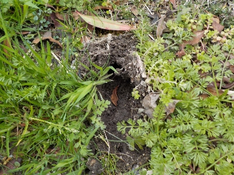
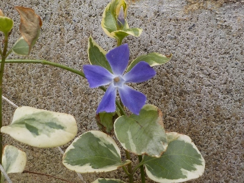
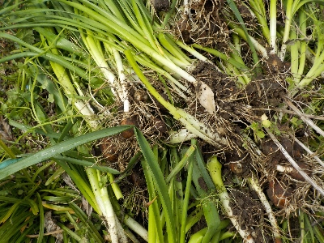

遊びで植物を育てよう
2024/03/30
レンギョウって人気がない気がする。

黄色は派手な色ですが、植物の黄色ってあんまり目立たないです。このレンギョウはいつから咲いていたんだろう？。
【3月TOP】
【日記TOP】
【園芸TOP】
2024/03/30
地植えの芝桜が開花しました。

鉢植えはまだですが、地植えが先に咲きました。地面は暖かいんですね。
【3月TOP】
【日記TOP】
【園芸TOP】
2024/03/17
つくしがあちこちで出てます。
もうちょちとしたらスギナが出ますね。
なんか憎たらしいので目に付くところのつくしはちぎり取りました。
【3月TOP】
【日記TOP】
【園芸TOP】
2024/03/03
庭のあちこちが獣に掘られていました。

なんて動物でしょうね？
イノシシはこのへんにはいないと思うんだけどな。
【3月TOP】
【日記TOP】
【園芸TOP】
2024/03/03
ツルニチニチソウが咲きました。

以前からツボミがあって、いつ咲くかなと見ていました。
花があるといいですね。ツルニチニチソウって、ちょっとしたスペースに植えるといいと思うんですが、そんなスペースって案外ないです。
【3月TOP】
【日記TOP】
【園芸TOP】
2024/03/03
水仙を大量に抜き捨てました。

畑で増えすぎた水仙を処分しました。
なんかもったいないですが仕方ないです。
【3月TOP】
【日記TOP】
【園芸TOP】
過去の日記
【2024年4月の日記】
【2023年3月の日記】
【2022年3月の日記】
【2021年3月の日記】
【2020年3月の日記】
【2019年3月の日記】
【2018年3月の日記】
【2017年3月の日記】
【2016年3月の日記】
【2015年3月の日記】
【2014年3月の日記】
【2013年3月の日記】
【3月TOP】
【日記TOP】
【園芸TOP】
畑仕事じゃないよ。
【おいしいものを食べよう。】【たくさん寝よう。】
【ソロ活をしよう!】【季節感のあることをしよう。】【動画視聴はほどほどに。】【当サイトの全てのコンテンツは無断転載禁止です。】